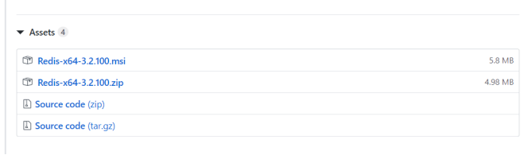

下载地址：https://github.com/MSOpenTech/redis/releases。

执行一下命令启动redis服务，后面conf可以省略
redis-server.exe redis.windows.conf
这时候另启一个 cmd 窗口，原来的不要关闭，不然就无法访问服务端了。
切换到 redis 目录下运行:
redis-cli.exe -h 127.0.0.1 -p 6379
下载地址：http://redis.io/download，下载最新稳定版本。
本教程使用的最新文档版本为 2.8.17，下载并安装：
$ wget http://download.redis.io/releases/redis-2.8.17.tar.gz
$ tar xzf redis-2.8.17.tar.gz
$ cd redis-2.8.17
$ make
make完后 redis-2.8.17目录下会出现编译后的redis服务程序redis-server,还有用于测试的客户端程序redis-cli,两个程序位于安装目录 src 目录下：
下面启动redis服务.
$ cd src
$ ./redis-server
注意这种方式启动redis 使用的是默认配置。也可以通过启动参数告诉redis使用指定配置文件使用下面命令启动。
$ cd src
$ ./redis-server ../redis.conf
redis.conf 是一个默认的配置文件。我们可以根据需要使用自己的配置文件。
启动redis服务进程后，就可以使用测试客户端程序redis-cli和redis服务交互了。 比如：
$ cd src
$ ./redis-cli
redis> set foo bar
OK
redis> get foo"bar"
查看配置
redis 127.0.0.1:6379> CONFIG GET *
修改配置
redis 127.0.0.1:6379> CONFIG SET loglevel "notice"
参数说明
redis.conf 配置项说明如下：
1. Redis默认不是以守护进程的方式运行，可以通过该配置项修改，使用yes启用守护进程
daemonize no
2. 当Redis以守护进程方式运行时，Redis默认会把pid写入/var/run/redis.pid文件，可以通过pidfile指定
pidfile /var/run/redis.pid
3. 指定Redis监听端口，默认端口为6379，作者在自己的一篇博文中解释了为什么选用6379作为默认端口，因为6379在手机按键上MERZ对应的号码，而MERZ取自意大利歌女Alessia Merz的名字
port 6379
4. 绑定的主机地址
bind 127.0.0.1
5.当 客户端闲置多长时间后关闭连接，如果指定为0，表示关闭该功能
timeout 300
6. 指定日志记录级别，Redis总共支持四个级别：debug、verbose、notice、warning，默认为verbose
loglevel verbose
7. 日志记录方式，默认为标准输出，如果配置Redis为守护进程方式运行，而这里又配置为日志记录方式为标准输出，则日志将会发送给/dev/null
logfile stdout
8. 设置数据库的数量，默认数据库为0，可以使用SELECT <dbid>命令在连接上指定数据库id
databases 16
9. 指定在多长时间内，有多少次更新操作，就将数据同步到数据文件，可以多个条件配合
save <seconds> <changes>
Redis默认配置文件中提供了三个条件：
save 900 1
save 300 10
save 60 10000
分别表示900秒（15分钟）内有1个更改，300秒（5分钟）内有10个更改以及60秒内有10000个更改。
10. 指定存储至本地数据库时是否压缩数据，默认为yes，Redis采用LZF压缩，如果为了节省CPU时间，可以关闭该选项，但会导致数据库文件变的巨大
rdbcompression yes
11. 指定本地数据库文件名，默认值为dump.rdb
dbfilename dump.rdb
12. 指定本地数据库存放目录
dir ./
13. 设置当本机为slav服务时，设置master服务的IP地址及端口，在Redis启动时，它会自动从master进行数据同步
slaveof <masterip> <masterport>
14. 当master服务设置了密码保护时，slav服务连接master的密码
masterauth <master-password>
15. 设置Redis连接密码，如果配置了连接密码，客户端在连接Redis时需要通过AUTH <password>命令提供密码，默认关闭
requirepass foobared
16. 设置同一时间最大客户端连接数，默认无限制，Redis可以同时打开的客户端连接数为Redis进程可以打开的最大文件描述符数，如果设置 maxclients 0，表示不作限制。当客户端连接数到达限制时，Redis会关闭新的连接并向客户端返回max number of clients reached错误信息
maxclients 128
17. 指定Redis最大内存限制，Redis在启动时会把数据加载到内存中，达到最大内存后，Redis会先尝试清除已到期或即将到期的Key，当此方法处理 后，仍然到达最大内存设置，将无法再进行写入操作，但仍然可以进行读取操作。Redis新的vm机制，会把Key存放内存，Value会存放在swap区
maxmemory <bytes>
18. 指定是否在每次更新操作后进行日志记录，Redis在默认情况下是异步的把数据写入磁盘，如果不开启，可能会在断电时导致一段时间内的数据丢失。因为 redis本身同步数据文件是按上面save条件来同步的，所以有的数据会在一段时间内只存在于内存中。默认为no
appendonly no
19. 指定更新日志文件名，默认为appendonly.aof
appendfilename appendonly.aof
20. 指定更新日志条件，共有3个可选值：
no：表示等操作系统进行数据缓存同步到磁盘（快）
always：表示每次更新操作后手动调用fsync()将数据写到磁盘（慢，安全）
everysec：表示每秒同步一次（折中，默认值）
appendfsync everysec
21. 指定是否启用虚拟内存机制，默认值为no，简单的介绍一下，VM机制将数据分页存放，由Redis将访问量较少的页即冷数据swap到磁盘上，访问多的页面由磁盘自动换出到内存中（在后面的文章我会仔细分析Redis的VM机制）
vm-enabled no
22. 虚拟内存文件路径，默认值为/tmp/redis.swap，不可多个Redis实例共享
vm-swap-file /tmp/redis.swap
23. 将所有大于vm-max-memory的数据存入虚拟内存,无论vm-max-memory设置多小,所有索引数据都是内存存储的(Redis的索引数据 就是keys),也就是说,当vm-max-memory设置为0的时候,其实是所有value都存在于磁盘。默认值为0
vm-max-memory 0
24. Redis swap文件分成了很多的page，一个对象可以保存在多个page上面，但一个page上不能被多个对象共享，vm-page-size是要根据存储的 数据大小来设定的，作者建议如果存储很多小对象，page大小最好设置为32或者64bytes；如果存储很大大对象，则可以使用更大的page，如果不 确定，就使用默认值
vm-page-size 32
25. 设置swap文件中的page数量，由于页表（一种表示页面空闲或使用的bitmap）是在放在内存中的，，在磁盘上每8个pages将消耗1byte的内存。
vm-pages 134217728
26. 设置访问swap文件的线程数,最好不要超过机器的核数,如果设置为0,那么所有对swap文件的操作都是串行的，可能会造成比较长时间的延迟。默认值为4
vm-max-threads 4
27. 设置在向客户端应答时，是否把较小的包合并为一个包发送，默认为开启
glueoutputbuf yes
28. 指定在超过一定的数量或者最大的元素超过某一临界值时，采用一种特殊的哈希算法
hash-max-zipmap-entries 64
hash-max-zipmap-value 512
29. 指定是否激活重置哈希，默认为开启（后面在介绍Redis的哈希算法时具体介绍）
activerehashing yes
30. 指定包含其它的配置文件，可以在同一主机上多个Redis实例之间使用同一份配置文件，而同时各个实例又拥有自己的特定配置文件
include /path/to/local.conf